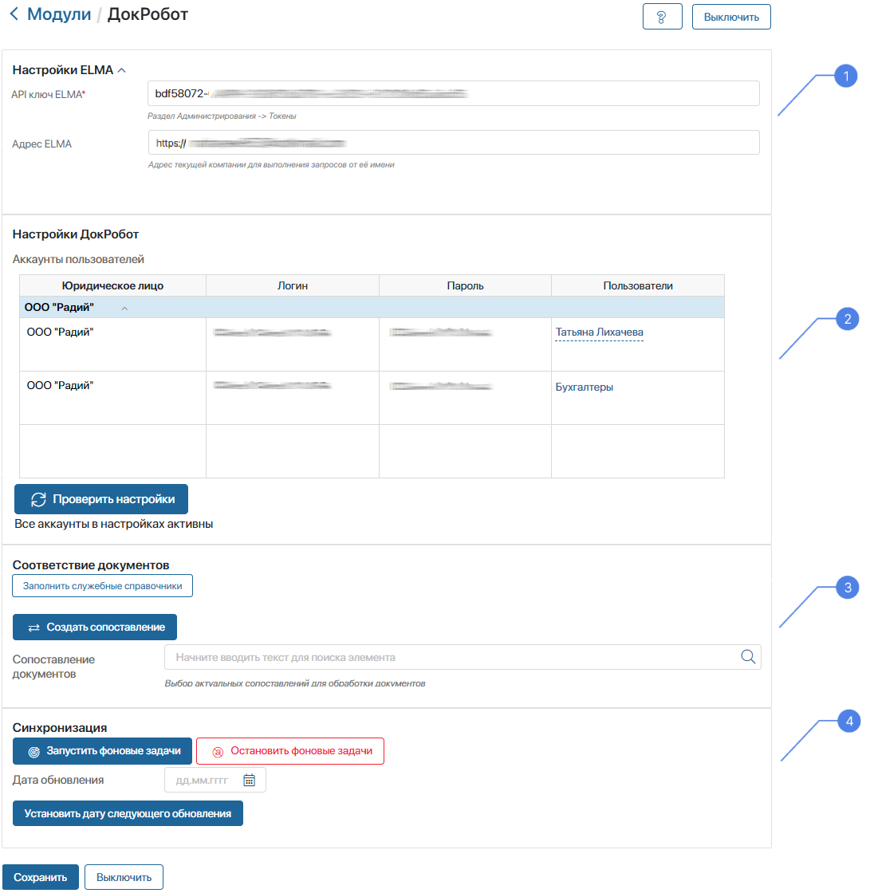
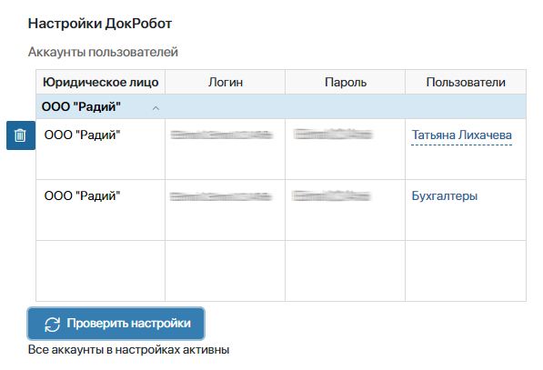
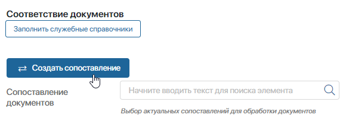
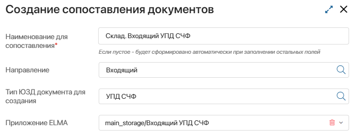
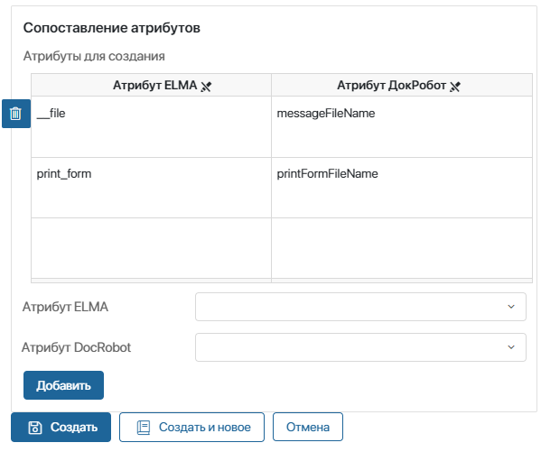
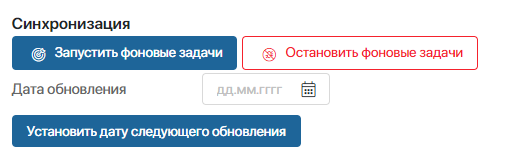

Решение предназначено для обмена юридически значимыми документами с контрагентами сервиса электронного документооборота DocRobot в интерфейсе ELMA365. Оно позволяет:
- отправлять, получать и согласовывать юридически значимые документы (УПД СЧФ, УПД СЧФДОП, УПД ДОП) с использованием электронной подписи;
- отслеживать статусы документов;
- получать печатные формы документов в формате .pdf;
- скачивать архив документов в формате .zip (исходный документ, квитанция, печатная форма).
Состав решения:
- модуль ДокРобот — для работы с сервисом DocRobot;
- раздел ДокРобот Модуль — используется для корректной работы модуля. Не отображается в левом меню и не предназначен для работы пользователей. Его не нужно настраивать, изменения приведут к ошибкам в работе интеграции.
Установить ДокРобот
Чтобы установить решение, выполните следующие действия:
- На любой странице системы в левом меню разделов нажмите на значок
 .
.
- В открывшемся окне Настройка Разделов и Решений перейдите на вкладку Решения, нажмите на кнопку +Добавить решение и выберите Скачать.
- В открывшемся каталоге ELMA365 Store выберите решение ДокРобот Beta и установите его.
Подробнее читайте в статье «Импорт решения из ELMA365 Store».
По окончании установки модуль ДокРобот и раздел ДокРобот Модуль добавятся в систему.
Настроить ДокРобот
Чтобы настроить модуль, перейдите в раздел Администрирование > Модули. В блоке Пользовательские модули нажмите на модуль ДокРобот и включите его. Далее выполните настройку блоков:

Настройки ELMA
Чтобы синхронизировать ELMA365 и DocRobot, заполните поля:
- API ключ ELMA* — вставьте в это поле токен, созданный в разделе Администрирование > Токены;
- Адрес ELMA365 — укажите URL-адрес главной страницы ELMA365, куда вы установили ДокРобот. Обратите внимание, поле не отображается, если URL-адрес передан в модуль из скрипта.
Настройки ДокРобот
Чтобы предоставить пользователям право отправлять документы в DocRobot, в таблице Аккаунты пользователей сопоставьте учётные записи сотрудников ELMA365 с их аккаунтами в DocRobot.
Для юридического лица, зарегистрированного в DocRobot, можно создать несколько учётных записей. Каждую учётную запись в DocRobot можно связать с конкретным пользователем, группой или элементом оргструктуры из ELMA365. Например, для группы пользователей Бухгалтеры можно настроить одну учётную запись в DocRobot. Тогда все сотрудники, входящие в эту группу, смогут работать с документами в DocRobot.

- Юридическое лицо — выберите организацию из системного справочника Мои юридические лица, от имени которой будут выполняться действия в DocRobot;
- Логин — введите логин учётной записи в DocRobot;
- Пароль — введите пароль учётной записи DocRobot;
- Пользователи — выберите пользователя, группу или элемент оргструктуры, которым разрешаете подписывать и отправлять документы от имени этого аккаунта в DocRobot.
Вы можете проверить данные в таблице Аккаунты пользователей. Для этого сначала нажмите Сохранить внизу страницы, а потом нажмите кнопку Проверить настройки. Логины недействительных учётных записей DocRobot отобразятся рядом с этой кнопкой.
Чтобы удалить строку таблицы, нажмите значок .
Соответствие документов
В этом блоке выберите приложения типа Документ из ELMA365 для участия в обмене документами с DocRobot и установите соответствие свойств каждого приложения и атрибутов в DocRobot. Для этого:
- Cоздайте элементы приложений Направления и Тип документов. Для этого нажмите кнопку Заполнить служебные справочники. Созданные элементы хранятся в разделе ДокРобот Модуль. Кнопка не отображается, если приложения уже заполнены.
- Нажмите кнопку Создать сопоставление.

- В открывшемся окне свяжите приложение ELMA365 с документопотоком и типом документа в DocRobot:

- Наименование для сопоставления* — укажите наименование по названию приложения, для которого создаётся сопоставление, чтобы упростить дальнейшую работу и поиск. Если поле оставить незаполненным, наименование сформируется автоматически из данных, указанных ниже;
- Направление — выберите документопоток в ELMA365, с которым будете работать:
- Входящий — документы, полученные из DocRobot;
- Исходящий — документы, загружаемые в DocRobot.
- Тип ЮЗД документа для создания — выберите тип документа в DocRobot: УПД СЧФ, УПД СЧФДОП или УПД ДОП;
- Приложение ELMA — выберите приложение типа Документ. Если в поле Направление выбран входящий документопоток, в это приложение поступают документы из DocRobot, а если исходящий — документы создаются в этом приложении, а затем отправляются в DocRobot. Одно приложение типа Документ можно связать с одним типом документа в DocRobot.
- Соотнесите свойства приложения типа Документ в ELMA 365 и атрибуты документа в DocRobot. Для одного свойства приложения ELMA365 выберите один атрибут документа DocRobot:
- для свойства типа Файл в ELMA365 выберите Файл документа в DocRobot, чтобы получать и отправлять файл документа;
- для свойства Печатная форма типа Файл из приложения в ELMA365 выберите атрибут Печатная форма в DocRobot. Тогда будет доступен просмотр .xml-файлов.

- Атрибут ELMA — выберите свойство приложения типа Документ;
- Атрибут DocRobot — выберите поле документа в DocRobot, которое соответствует указанному выше свойству приложения.
Нажмите Добавить. В таблице Атрибуты для создания появится запись. Таким образом сопоставьте все свойства приложения ELMA365. Чтобы удалить строку таблицы, нажмите значок .
- После сопоставления всех полей нажмите кнопку Создать. Чтобы сопоставить другие документы, нажмите кнопку Создать и новое.
- В блоке Соответствие документов напротив поля Сопоставление документов нажмите на значок лупы и выберите приложения, которые будут синхронизироваться с DocRobot.
Синхронизация
Эта настройка позволяет своевременно обмениваться данными между ELMA365 и DocRobot. Включить синхронизацию можно в фоновом режиме, нажав кнопку Запустить фоновые задачи. После этого раз в 5 минут начнут выполняться запросы в DocRobot и обновляться данные в ELMA365.

Чтобы отключить синхронизацию с DocRobot, нажмите кнопку Остановить фоновые задачи.
Если при обмене документами возникла ошибка, задайте дату начала следующей синхронизации в поле Дата обновления. Затем нажмите Установить дату следующего обновления. Тогда при следующей синхронизации обновятся данные за период, начиная с 00 часов 00 минут 00 секунд указаной даты обновления.
Например, 04 декабря вам нужно повторно получить документ за вчерашний день. Для этого задайте дату 03 декабря в поле Дата обновления и нажмите Установить дату следующего обновления. Тогда при синхронизации в ближайшие 5 минут произойдёт обмен документами за период, начиная с 03.12.2023 00:00:00. Затем дата обновления сбросится, и период следующей синхронизации составит снова 5 минут.
После заполнения настроек в блоках Настройки ELMA, Настройки ДокРобот, Соответствие документов и настройки синхронизации нажмите кнопку Сохранить внизу страницы.